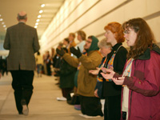

|
Wrap-up: 2004 General Conference May 7, 2004 By Linda Bloom*  | A UMNS photo by John C. Goodwin. Delegates Burnham A. Robinson (left) and Rev. Judith A. Sands embrace following a vote.
|
PITTSBURGH (UMNS) — After 10 days of debates and demonstrations, petitions and prayers, delegates to the 2004 United Methodist General Conference firmly committed themselves to the unity of the church.
The nearly 1,000 delegates joined hands and sang the hymn, “Blest Be the Tie That Binds,” then overwhelmingly agreed that “As United Methodists, we remain in covenant with one another, even in the midst of disagreement, and affirm our commitment to work together for the common mission of making disciples throughout the world.” During the April 27-May 7 meeting, the delegates processed petitions through 11 legislative committees; engaged in daily worship and prayer; and crafted — through floor vote and debate — the final legislation that will be printed in the 2004 Book of Discipline, the church’s book of law and social principles, and the 2004 Book of Resolutions, which focuses on global concerns and social justice issues. In what probably was the largest single addition of membership since the Methodist and Evangelical United Brethren churches merged in 1968, the denomination officially took the 1 million-member Protestant Methodist Church of Cote d’Ivoire (Ivory Coast) into full membership. The Rev. Benjamin Boni, leader of the formerly autonomous West African church, called the vote “a moment of great joy.” The city of Pittsburgh got a taste of how United Methodists put mission into action when bishops and delegates helped load 50-pound bags of potatoes into a truck headed for the Pittsburgh Community Food Bank. The “potato drop” was sponsored by the Society of St. Andrew, an ecumenical, nonprofit organization, and United Methodist Men. Here are some highlights of the 2004 General Conference at the David L. Lawrence Convention Center in Pittsburgh: Unity issues The floating of a proposal to dissolve the United Methodist Church into two separate denominations sparked hallway discussions and considerable media attention. Although the proposal never came to the conference floor, two conservative church leaders, the Rev. William Hinson and the Rev. James Heidinger, talked openly about an “amicable” divorce over “irreconcilable differences.” But other conservatives, as well as a number of bishops and representatives of liberal groups, told reporters they rejected the idea of a split. The Rev. John Schol of Eastern Pennsylvania, who brought the unity resolution to the floor May 7, said he felt the measure was needed to block “a movement to drive a wedge in our denomination.” Differences that exist within the church body include disagreement over the denomination’s official position that homosexuality is “incompatible with Christian teaching.” Expressing disappointment with that view, more than 200 United Methodists stood in front of the convention center on May 4 in silent witness to their desire for inclusiveness. Two days later, Soulforce, a gay rights advocacy group, staged a peaceful interruption of the morning conference session, as several hundred people circled the floor carrying banners and singing hymns of reconciliation. Sexuality issues |  | A UMNS photo by Mike DuBose. Laura Folkwein (right) and Elizabeth Brick (second from right) pray during a protest at General Conference. |
Delegates solidly reaffirmed the denomination’s positions on homosexuality, and their action was backed by Judicial Council decisions announced during the conference.
Paragraph 161.G of the church’s Social Principles continues to state that homosexual practice is “incompatible with Christian teaching,” although a clause was added that United Methodists “will seek to live in Christian community.” An attempt to add another sentence to the paragraph recognizing that Christians disagree on the homosexuality issue was defeated. Prohibitions against the ordination of self-avowed practicing homosexuals were upheld, and attempts to adjust language in Paragraph 162.H, which deals with equal rights regardless of sexual orientation, were defeated by 2-1 margins. Annual conference treasurers and councils on finance also now have the authority to ensure that church money is not being used to promote the acceptance of homosexuality. Exceptions to the rule are for ministries addressing HIV/AIDS or educational events where the church’s official position on homosexuality is evident. Paragraph 2702 in the Book of Discipline was amended to clarify language and give bishops, pastors and diaconal ministers a list of chargeable offenses that could result in a church trial. Those offenses include not being celibate in singleness or being unfaithful in a heterosexual marriage; being a self-avowed practicing homosexual; conducting ceremonies that celebrate homosexual unions or performing same-sex wedding ceremonies. The Judicial Council ruled that it had no authority to review the outcome of the Karen Dammann trial. Dammann, a Seattle-area clergywoman, was found not guilty in March of engaging in “practices incompatible with Christian teaching,” even though the trial jury found she openly admitted to being a practicing homosexual. Delegates also considered a number of petitions related to marriage. By a vote of 624-184, they added a sentence to Paragraph 161.C, which focuses on marriage, in the denomination’s Social Principles. The new sentence reads: “We support laws in civil society that define marriage as the union of one man and one woman.”The church’s Social Principles have supported marriage as being between a man and a woman since 1972.Other proposals included a petition supporting a federal marriage amendment, which would state that marriage “shall consist only of the union of a man and a woman.” That petition failed in a 745-77 vote. Social/international issues Without debate, delegates voted to join several other communions in the National Council of Churches, as well as the council itself, in observing the Taco Bell boycott initiated by the Florida-based Coalition of Immokalee Workers. The consumer boycott is in protest of Taco Bell’s refusal to address the issue of alleged worker exploitation by its tomato suppliers. The criteria for lifting the boycott include Taco Bell convening “serious three-way talks” with the workers and tomato suppliers. United Methodists will establish a monitoring committee to assess the progress of negotiations. At the end of the conference, delegates also decided, in a close vote, to support a boycott of Mount Olive Pickle Co. products until the Farm Labor Organizing Committee and the company reach an agreement on collective bargaining. Support of the boycott reaffirms the church’s justice witness for migrant farm workers.
Denominationwide boycotts are rare in the United Methodist Church and can only be approved by General Conference, the top legislative body. During the last minutes of the conference, delegates approved a resolution supporting calls for a full investigation of alleged abuses of Iraqi prisoners by the U.S. military. The resolution also calls for adherence to the Geneva Convention regarding the treatment of prisoners of war.  | A UMNS photo by Mike DuBose. Bishops Ernest S. Lyght (kneeling) and Raymond Owen (right) share a laugh while helping to unload 45,000 pounds of potatoes. |
In a resolution regarding stem-cell research, the church opposed the creation of embryos “with the intention of destroying them for research purposes.” The resolution also condemns the production of more embryos than needed for reproductive purposes, but supports “those persons who wish to enhance medical research by donating their early embryos remaining after in-vitro fertilization procedures have ended.”
In related action, delegates voted 467-421 to create a task force to research issues surrounding artificial insemination and other reproductive methods. A task force will be created to study the connection between teen sexual identity and suicide risk, and the report will be published to use as a resource for congregations and families. Delegates also asked the Board of Discipleship to identify or create resources on the problems facing today’s African-American family. Delegates were unanimous in passing a resolution of concern for 5 million displaced persons in the Sudan and what could become genocide in the southern part of that East African nation. They condemned the government-sponsored violence and resulting humanitarian crisis which has killed an estimated 2 million people. Other international resolutions called for creating a Global AIDS Fund by the church; ending the economic embargo against Cuba; withdrawing U.S. military presence from the island of Okinawa; and purchasing coffee through fair trade partners. Budget issues After a three-hour debate, delegates adopted a four-year, $612.5 million budget for worldwide ministries, representing a 12.2 percent increase over the 2001-04 budget. That total will be apportioned to each of the 63 U.S. annual conferences. The amount each conference is assessed is based on net expenditures and regional factors, including per capita income and church attendance. The United Methodist Board of Pension and Health Benefits was ordered to conduct a study on the feasibility of providing a single health-care plan for all U.S. annual conferences. A new pension program also was approved for clergy and employees of United Methodist agencies. Organizational structure Delegates re-crafted the “Living into the Future” proposal presented by the General Council on Ministries. Their action sets up a 47-member “Connectional Table” to help guide the work of the denomination’s general agencies, eliminates the Council on Ministries and leaves the General Council on Finance and Administration intact. The creation of a Division on Ministries with Young People was overwhelmingly approved and will be related to the denomination’s Board of Discipleship. As a result of the action, the United Methodist Youth Organization and the Forum for Adult Workers in Youth Ministry will disband. The Shared Mission Focus on Young People will be folded into the new division. In organizational elections, four people were elected to the Judicial Council and four to University Senate, a group that determines which academic institutions meet the criteria for affiliation with the United Methodist Church. A long-standing mission organization, United Methodist Women, was recognized in honor of its 135th anniversary. Evangelism/membership plans Delegates voted to continue all of the denomination’s current plans for reaching different groups inside and outside the church. Those programs include the Native American Comprehensive Plan, Korean-American National Plan, Asian-American Language Ministry Study, National Plan for Hispanic/Latino Ministry and Strengthening the Black Church for the 21st Century. An African-American Methodist Heritage Center also is to be created. Two special mission programs “Holistic Strategy on Africa” and “Holistic Strategy on Latin America and the Caribbean,” to be funded and coordinated through the United Methodist Board of Global Ministries, were approved. A study on the relationship between United Methodists and autonomous Methodists in Latin America and the Caribbean also will be conducted. Acknowledging the value of the voices of youth and young adults, delegates agreed to add an address by a young person to the agenda of the 2008 General Conference. Delegates voted to establish a Global Education Fund, which will be used by the United Methodist Board of Higher Education and Ministry to assist 748 Methodist schools, colleges, universities and seminaries in 69 countries. Funding for the church-related Africa University in Zimbabwe also was continued.  | A UMNS photo by Mike DuBose. The Mass Choir of singers from nine United Methodist seminaries leads morning worship. |
In an effort to support rural ministries, General Conference continued its support for the National Comprehensive Plan for Town & Country Ministries and later directed that funding come through the Board of Global Ministries. Older-adult ministries in local churches also were strengthened through the creation of a council on such ministries in each annual conference.
Delegates voted to expand the denomination’s media campaign — with the message of “Open Hearts. Open Minds. Open Doors.” — over the next four years. United Methodist Communications, which coordinates the campaign, also received approval for a separate youth component to the campaign and a plan to improve communications for church members in countries outside the United States. A concordat agreement between the United Methodist Church and Methodist Church of Puerto Rico was approved as a way of continuing the special relationship of the two bodies. Worship Daily worship was a mainstay of General Conference. The April 27 opening worship featured drummers from diverse cultures; singing in Korean, Swahili, Spanish and French; and an African dance that reminded the audience of the words of Psalm 150:6, “Let everything that breathes praise the Lord!” On a more somber note, an April 30 “Service of Appreciation” honored and celebrated African Americans who did not leave the denomination because of racism but remained as members of the church and its predecessor bodies. The service recognized wounds and encouraged healing as delegates confessed to the sin of racism in the church. A May 4 “Service of Christian Unity” was held before a wide array of ecumenical guests and featured Bishop McKinley Young of the African Methodist Episcopal Church. Two United Methodists — the Rev. Bruce Robbins, former chief executive of the United Methodist Commission on Christian Unity and Interreligious Concerns, and the Rev. Robert Edgar, chief executive of the National Council of churches — were recognized after the service for their contributions to ecumenical relations. The 2008 General Conference will be in Fort Worth, Texas.
*Bloom is a United Methodist News Service news writer. News media contact: (646) 369-3759.
|